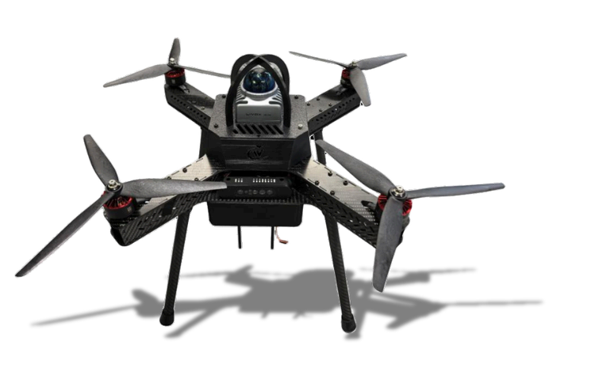

AeroBOT-A1 人工竞赛教学科研无人机
人工智能无人机实践系列核心设备，基于ROS系统开发，集教学实训、算法科研、空中机器人大赛参赛三位一体高精度无人机平台。

产品概述
AeroBOT-A1是面向高校人工智能、自动化、无人机专业打造的高精度ROS无人机开发平台，归属人工智能无人机实践系列产品。整机搭载3D激光雷达、视觉感知传感器与机载机械爪手，可完成室内外环境感知、目标识别、自主飞行与空中作业抓取；配套完整开源代码、功能软件包与配套实验指导手册，支持课堂教学、二次开发、算法验证、科创项目落地，同时是多项全国顶级AI空中机器人大赛官方指定参赛平台。
核心功能
多源环境感知：搭载3D激光雷达+视觉传感器+姿态传感器，实现室内外全域环境感知。
AI智能识别算法：支持深度学习、机器视觉目标识别，配套AI控制器分布式运算架构。
双模式飞行控制：兼容手动遥控飞行与全自主规划飞行，支持陆地/空中双运行模式切换。
机载抓取作业：配备机载机械爪手，可完成竞赛类空中抓取、搬运任务科目。
ROS全栈开发：原生搭载ROS操作系统，开放底层控制指令、IMU、雷达、视觉全链路数据接口。
专业赛事适配：适配国际青年人工智能大赛、全球校园AI算法精英赛等空中机器人挑战赛。
产品特点
多传感器融合配置，同时支持手动操控与全自主飞行模式。
消费级高标准品控，搭载Nvidia核心AI运算控制器。
集成SLAM地图构建与人工智能视觉算法一体化开发环境。
采用pixhawk开源飞控底层，飞行稳定可靠，拓展性强。
整机配套软件全部开源，厂商提供终身免费升级维护服务。
基本配置参数
应用价值
AeroBOT-A1打通AI无人机教学、科研、竞赛全流程应用链路。教学层面可用于人工智能、无人机专业课堂实验，降低学生入门门槛；科研层面可快速搭建算法原型机，完成感知、导航、机器视觉相关课题验证；竞赛层面作为官方指定参赛机型，厂商配套完整赛事技术支持，助力学生在全国性AI空中机器人赛事中取得优异成绩，同时支持师生开展创业项目原型开发。
适用场景
高校人工智能/自动化专业教学实验室、ROS无人机算法科研开发、空中机器人竞赛备赛平台、大学生科创创业项目研发、机器视觉与SLAM自主导航实训教学。